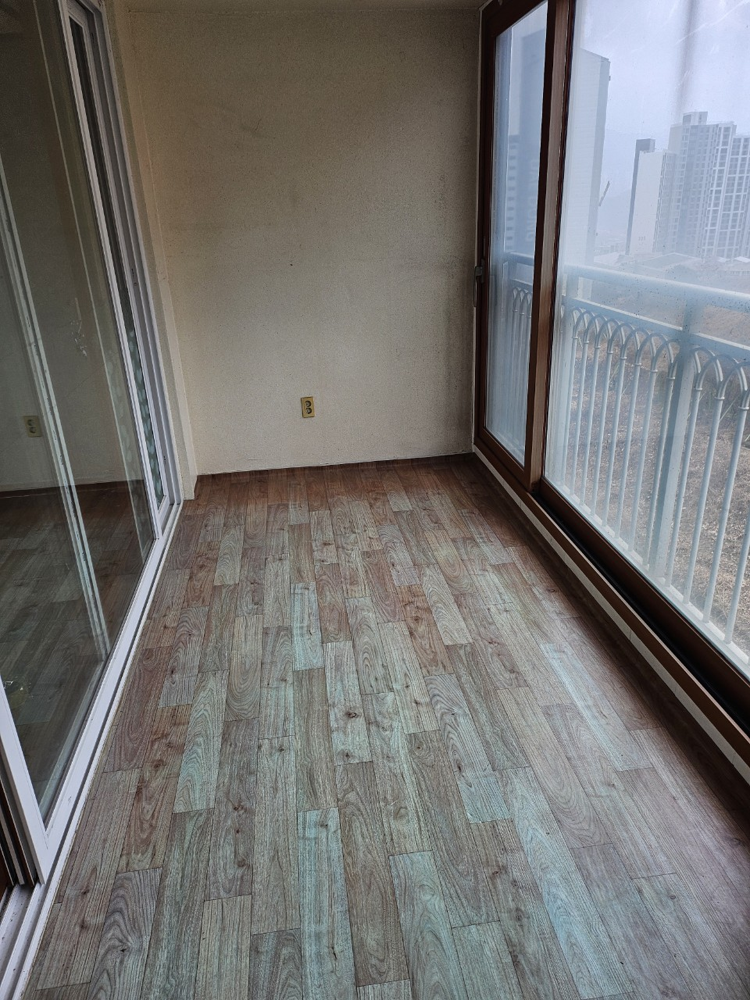

쓰레기집청소
장기간 방치된 생활폐기물 분류·포장·반출
서울 25개 구 안내 허브
이 페이지는 서울 전역 서비스 소개가 아니라, 자치구별 상세 안내로 이동하는 허브입니다. 작업 주소의 구를 선택하면 쓰레기집청소·빈집정리·가정·이사·폐업폐기물 상담 내용을 확인할 수 있습니다.

SEOUL HUB
서울은 고층 아파트·다세대·상가주택이 밀집해 엘리베이터 사용, 주차·하역, 관리실 협조가 작업 일정에 크게 영향을 줍니다. 같은 양의 폐기물이라도 강남권 대단지와 다세대 밀집 지역은 반출 동선이 달라 구별 페이지에서 현장 조건을 먼저 확인하는 것이 좋습니다.
올바른 폐기물처리는 서울 25개 구 상담이 가능합니다. 상세 비용·진행 방식은 각 구 페이지와 사진 상담으로 안내드리며, 이 허브에서는 원하는 구로 빠르게 이동할 수 있습니다.
SERVICE SCOPE
유형별 세부 안내는 해당 구 페이지에서 확인하세요. 여기서는 서울 공통 범위를 요약합니다.
장기간 방치된 생활폐기물 분류·포장·반출
매매·임대·리모델링 전 잔여 가구·짐 정리
가구·가전·생활용품 등 가정 배출물 수거
이사 전후 불필요 짐·대형폐기물 일괄 정리
사무실·매장·창고 집기 및 잔여물 처리
PRICE
일반폐기물 30만원부터. 구·건물·반출 조건에 따라 달라집니다.
정확한 금액은 구 선택 후 사진 상담으로 안내드립니다.SEOUL FAQ
작업 주소가 있는 자치구 페이지를 선택하시면 됩니다. 위 25개 구 목록에서 바로 이동할 수 있습니다.
가능합니다. 엘리베이터·주차·하역·관리실 협조 여부를 확인한 뒤 일정을 잡습니다.
신고 배출은 품목별 스티커 방식이고, 업체 처리는 양이 많거나 한 번에 반출이 필요할 때 분류부터 상차까지 진행합니다.
일반폐기물 30만원부터입니다. 구와 현장 조건에 따라 달라질 수 있습니다.
REVIEW
서울 현장 작업 전·후 사진은 작업후기 모음에서 확인할 수 있습니다.
구별 상세 안내와 별도로, 실제 정리 사례는 후기 페이지에서 확인하세요.
구·동과 현장 사진을 함께 남겨주시면 더 빠르게 안내드립니다.